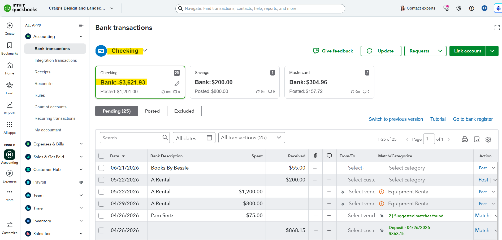

Purpose
Review transactions imported from the bank feed and decide whether each transaction should be added, matched, categorized, or excluded.
Simple Example
QuickBooks shows 25 pending transactions in Checking. Some items need categories, and some deposits have suggested matches.
Simple Bookkeeping Decision Rule
Match first when a transaction already exists in QuickBooks. Add only when the transaction is new. Exclude only when it is a duplicate or should not be recorded.

Analysis
I reviewed the bank transactions screen for the Checking account. The screenshot shows a bank balance of -$3,621.93, posted balance of -$623.38, and bank transactions waiting for review. The bank feed includes transactions such as Books By Bessie for $55.00 and A Rental transactions that need matching or categorization before posting.
Result
The bank feed review identifies which transactions need action. After review, each item can be posted, matched to an existing record, categorized to the correct account, or excluded if it is not valid.